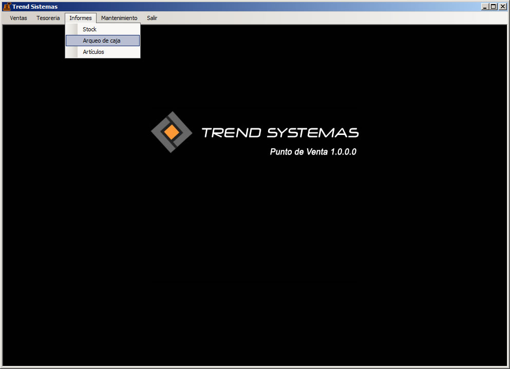
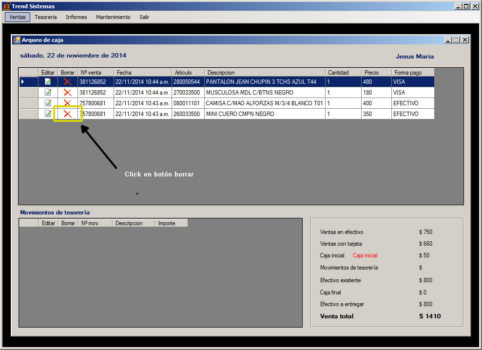

En la barra de menu hacer click en Informes y luego en Arqueo de caja.

Hacer click en el botón borrar en movimientos de tesorería.

NOTA: se borrará toda la venta, es decir la venta seleccionada y las ventas cuyo número de venta coincidan.
En este caso se borrarían las ventas con el número de venta 757800681.